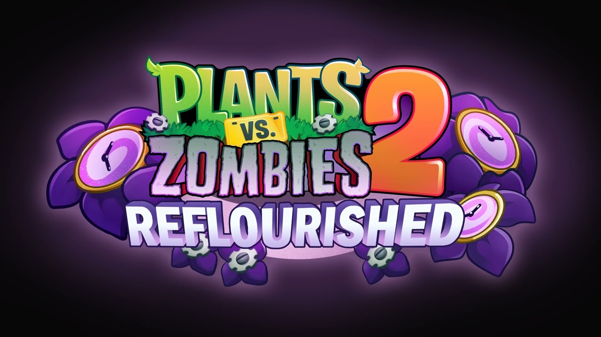
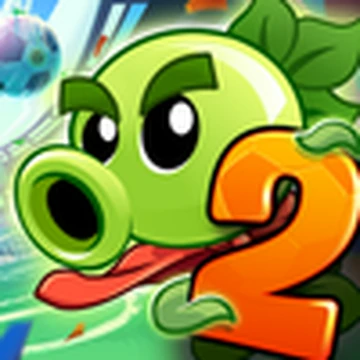

Pc versions

PvZ Fusion(PC)
Plants vs. Zombies: Fusion (commonly known as PvZ Fusion Edition) is a massive, fan-made modification created by a Chinese developer named Lan Piaopiao Fly.Built entirely within the Unity engine, this game completely reimagines the iconic 2009 PopCap classic by introducing an incredibly deep hybrid system.The core premise allows players to literally plant different species on top of one another, merging their unique abilities into completely new defense mechanisms.For instance, combining a basic Peashooter with a Sunflower creates a Sunshooter, an efficient hybrid that simultaneously attacks enemies and generates essential sun currency.Fusing a Wall-nut with a Cherry Bomb results in an organic shield that triggers a massive explosion the exact moment a zombie manages to fully consume it.With over 400 unique combinations available in the latest versions, the strategic possibilities and creative defensive setups are practically endless for experimental players.The fusion mechanic is surprisingly intuitive, requiring you to simply drag and drop a seed packet directly over an already placed plant on your suburban lawn.Advanced tiers also exist, allowing players to stack multiple layers of fusions together, culminating in incredibly rare Ultimate and Mythical tier plant variants.To balance out your botanical army, the game dramatically escalates the strength, health pool, and overall speed of the incoming undead waves.Zombies themselves undergo fusions, gaining mechanical armor, defensive shields, and boss-level special abilities.The game features highly challenging difficulty settings, including notorious high-intensity modes where enemies swarm the screen at many times the normal speed.To help players survive this absolute chaos, the developer introduced a revolutionary item tool called the Gloves, which allows you to freely move plants across the grid.You can also use special Shovels to separate previously fused plants back into their base forms, allowing for highly flexible, real-time tactical adjustments mid-match.Modern quality-of-life features like fast-forward buttons, visible zombie health bars, and an extensive custom Almanac make the experience feel highly polished.Beyond the main adventure, the game includes unique game modes such as the Odyssey challenges, testing the absolute limits of your strategy.Ultimately, PvZ Fusion has taken the internet by storm, breathing brand new life into the franchise and proving how creative the gaming community can truly be.
PvZ Fusion Modified(PC)
Plants vs. Zombies: Fusion (commonly known as PvZ Fusion Edition) is a massive, fan-made modification created by a Chinese developer named Lan Piaopiao Fly.Built entirely within the Unity engine, this game completely reimagines the iconic 2009 PopCap classic by introducing an incredibly deep hybrid system.The core premise allows players to literally plant different species on top of one another, merging their unique abilities into completely new defense mechanisms.For instance, combining a basic Peashooter with a Sunflower creates a Sunshooter, an efficient hybrid that simultaneously attacks enemies and generates essential sun currency.Fusing a Wall-nut with a Cherry Bomb results in an organic shield that triggers a massive explosion the exact moment a zombie manages to fully consume it.With over 400 unique combinations available in the latest versions, the strategic possibilities and creative defensive setups are practically endless for experimental players.The fusion mechanic is surprisingly intuitive, requiring you to simply drag and drop a seed packet directly over an already placed plant on your suburban lawn.Advanced tiers also exist, allowing players to stack multiple layers of fusions together, culminating in incredibly rare Ultimate and Mythical tier plant variants.To balance out your botanical army, the game dramatically escalates the strength, health pool, and overall speed of the incoming undead waves.Zombies themselves undergo fusions, gaining mechanical armor, defensive shields, and boss-level special abilities.The game features highly challenging difficulty settings, including notorious high-intensity modes where enemies swarm the screen at many times the normal speed.To help players survive this absolute chaos, the developer introduced a revolutionary item tool called the Gloves, which allows you to freely move plants across the grid.You can also use special Shovels to separate previously fused plants back into their base forms, allowing for highly flexible, real-time tactical adjustments mid-match.Modern quality-of-life features like fast-forward buttons, visible zombie health bars, and an extensive custom Almanac make the experience feel highly polished.Beyond the main adventure, the game includes unique game modes such as the Odyssey challenges, testing the absolute limits of your strategy.Ultimately, PvZ Fusion has taken the internet by storm, breathing brand new life into the franchise and proving how creative the gaming community can truly be.
Mobile versions

PvZ 2 Reflourished
Plants vs. Zombies 2: Reflourished is a massive, fan-made modification that completely overhauls the original game to restore its classic, golden-era feeling.Developed by a dedicated team led by PvZ AV, it envisions what the game would look like if it continued expanding organically without microtransactions.The mod acts like a DLC-sized expansion, built on top of the original game while preserving vanilla assets, custom music, and high-quality art.One of its biggest changes is the complete removal of the controversial plant-leveling system, forcing players to rely purely on traditional strategy.Additionally, all aggressive pay-to-win microtransactions and locked premium content have been entirely eliminated from the game's progression loop.Formerly paid premium plants are now easily unlocked through regular gameplay, special world quests, or by spending gems earned from bosses.The mod significantly scales up the depth of the game, offering over 600 carefully designed levels for casual and hardcore players alike.Every single original world from the base game—from Ancient Egypt to Modern Day—has been expanded with 10 to 18 challenging new bonus levels.Beyond expanding the base content, the development team introduced entirely new custom worlds with unique time periods, environmental gimmicks, and specialized bosses.Holiday Mashup takes players through a festive gauntlet featuring holiday-themed zombie variants causing festive chaos across the lawn.Steam Ages, inspired by the Chinese version, drops players into the Industrial Revolution where toxic sewer mechanics threaten your defenses.Caliginous Carnival brings a dark, eerie, and atmospheric carnival aesthetic filled with unpredictable circus-themed undead threats.To accommodate these challenging new settings, the mod introduces an array of brand new plants, including returning favorites from the first game.Conversely, Dr. Zomboss deploys creative new zombie types, like rock carriers in Jurassic Marsh or high-speed goth punk zombies in Neon Mixtape Tour.The sandbox has been meticulously rebalanced, implementing subtle nerfs to overly broken plants to ensure every defense option feels viable and distinct.Quality-of-life additions include restored classic minigames, returning soundtracks, a widescreen format layout, and full support for your old official save files.Ultimately, PvZ 2: Reflourished stands as a masterful refinement of the sequel, giving fans the highly polished, fair, and microtransaction-free experience they always wanted.

PvZ 2 Chinese
Plants vs. Zombies 2 Chinese Edition is a massive, official standalone version developed by PopCap Shanghai specifically for China.While it shares the core foundation of the international release, it has evolved into a vastly different, feature-rich experience.The development team continuously expands the game by adding exclusive historical worlds that Western players have never officially seen.Kung Fu World drops players into ancient China, where martial arts zombies utilize unique combat stances to destroy your plants.Sky City completely changes the classic formula by taking place entirely on a flying warship with limited defense grid tiles.Steam Age introduces a gritty Industrial Revolution London setting, featuring toxic sewer steam vents that choke out your flora.Heian Age brings a beautiful feudal Japan aesthetic, complete with tricky shadow ninjas and mystical cherry blossom tree mechanics.To combat these new settings, the game introduces dozens of exclusive plants deeply rooted in Asian culture and mythology.Plants like the Bamboo Shooter, Matcha Tank, and Fire Gatling Pea offer incredibly flashy, screen-clearing offensive attack options.The core progression relies heavily on RPG and gacha elements, moving far away from the traditional casual strategy model.Plants can be upgraded all the way up to Level 5 by collecting specific Puzzle Pieces through gameplay.Reaching Level 5 completely transforms a plant's attack style, turning basic projectiles into massive plasma bursts or homing missiles.The Plant Awakening mechanic gives upgraded plants a passive chance to instantly trigger their ultimate ability upon being placed.Zombies are equally dangerous, possessing higher health bars, defensive equipment, and entirely unique mechanics tailored to each historical era.Dr. Zomboss deploys completely original giant mech suits, forcing players to think carefully about their high-tier plant setups.Outside of the main adventure worlds, the game features a dedicated laboratory system known as Gene Modification.This system allows players to fuse distinct genetic attributes to permanently boost plant attack power, speed, or health stats.A massive feature is the Memory Lane mode, which beautifully recreates the exact visual aesthetic of the first game.This nostalgic arcade mode allows veteran fans to play classic 2009-style levels using the updated PvZ 2 engine mechanics.There is also a highly competitive PVP Base Battle mode where players can actively raid each other's custom setups.In this mode, you build a custom zombie army, upgrade their stats, and launch them against other real players.The game also incorporates the Artifact System, allowing you to equip powerful treasures that grant massive board-wide passive buffs.These artifacts can actively freeze the entire screen, summon protective storms, or instantly generate massive amounts of sun currency.The overall difficulty is significantly higher than the international version, requiring heavy grinding and precise high-level character optimization.Visually, the game is a chaotic spectacle, filled with bright particle effects, giant numbers, and constantly changing background elements.Despite the heavy monetization and gacha systems, the sheer volume of unique content keeps millions of players deeply engaged.It serves as a fascinating alternate universe where the beloved franchise never stopped expanding its core tower defense universe.The game receives frequent seasonal updates, timed holiday events, and community contests that keep the meta constantly shifting.It remains a highly sought-after experience for Western fans who use translation guides just to access the app.Ultimately, the Chinese Edition stands as an incredibly wild, content-packed, and unforgettable evolution of the classic zombie war.
PvZ Fusion(PHONE)
Plants vs. Zombies: Fusion (commonly known as PvZ Fusion Edition) is a massive, fan-made modification created by a Chinese developer named Lan Piaopiao Fly.Built entirely within the Unity engine, this game completely reimagines the iconic 2009 PopCap classic by introducing an incredibly deep hybrid system.The core premise allows players to literally plant different species on top of one another, merging their unique abilities into completely new defense mechanisms.For instance, combining a basic Peashooter with a Sunflower creates a Sunshooter, an efficient hybrid that simultaneously attacks enemies and generates essential sun currency.Fusing a Wall-nut with a Cherry Bomb results in an organic shield that triggers a massive explosion the exact moment a zombie manages to fully consume it.With over 400 unique combinations available in the latest versions, the strategic possibilities and creative defensive setups are practically endless for experimental players.The fusion mechanic is surprisingly intuitive, requiring you to simply drag and drop a seed packet directly over an already placed plant on your suburban lawn.Advanced tiers also exist, allowing players to stack multiple layers of fusions together, culminating in incredibly rare Ultimate and Mythical tier plant variants.To balance out your botanical army, the game dramatically escalates the strength, health pool, and overall speed of the incoming undead waves.Zombies themselves undergo fusions, gaining mechanical armor, defensive shields, and boss-level special abilities.The game features highly challenging difficulty settings, including notorious high-intensity modes where enemies swarm the screen at many times the normal speed.To help players survive this absolute chaos, the developer introduced a revolutionary item tool called the Gloves, which allows you to freely move plants across the grid.You can also use special Shovels to separate previously fused plants back into their base forms, allowing for highly flexible, real-time tactical adjustments mid-match.Modern quality-of-life features like fast-forward buttons, visible zombie health bars, and an extensive custom Almanac make the experience feel highly polished.Beyond the main adventure, the game includes unique game modes such as the Odyssey challenges, testing the absolute limits of your strategy.Ultimately, PvZ Fusion has taken the internet by storm, breathing brand new life into the franchise and proving how creative the gaming community can truly be.